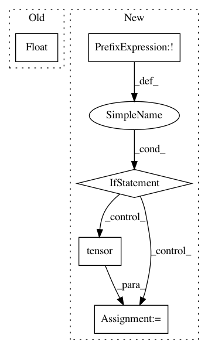

f7dba6ab79adaf77e7266bd614b75c2a47fda698,kornia/enhance/adjust.py,,sharpness,#Any#Any#,398
Before Change
assert input.size(0) == factor.size(0), \
f"Input batch size shall match with factor size if 1d array. Got {input.size(0)} and {factor.size(0)}"
else:
factor = float(factor)
kernel = torch.tensor([
[1, 1, 1],
[1, 5, 1],
[1, 1, 1]
After Change
[ 0.6181, -0.4128, -0.8411, -2.3160, -0.1023]]]])
input = _to_bchw(input)
if not isinstance(factor, torch.Tensor):
factor = torch.tensor(factor, device=input.device, dtype=input.dtype)
if len(factor.size()) != 0:
assert factor.shape == torch.Size([input.size(0)]), (
"Input batch size shall match with factor size if factor is not a 0-dim tensor. "
f"Got {input.size(0)} and {factor.shape}")
In pattern: SUPERPATTERN
Frequency: 3
Non-data size: 5
Instances
Project Name: arraiy/torchgeometry
Commit Name: f7dba6ab79adaf77e7266bd614b75c2a47fda698
Time: 2020-11-22
Author: sj8716643@126.com
File Name: kornia/enhance/adjust.py
Class Name:
Method Name: sharpness
Project Name: elbayadm/attn2d
Commit Name: 5a2f76ede044b4904af9461e18253f2929cfc5a4
Time: 2019-10-23
Author: dnn@fb.com
File Name: fairseq/criterions/nat_loss.py
Class Name: LabelSmoothedDualImitationCriterion
Method Name: _compute_loss